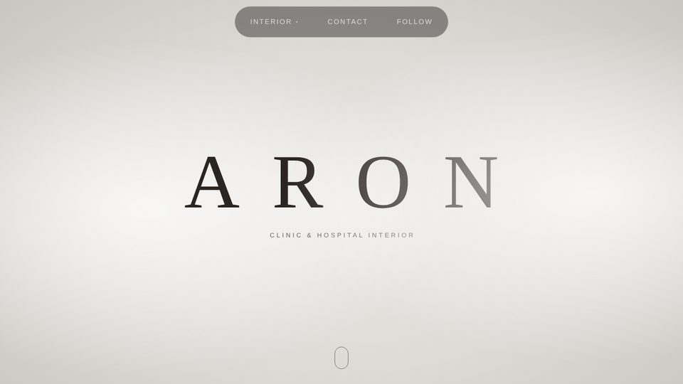
01안개 속 ARON
밝은 안개와 가운데 로고, 아래에 스크롤 아이콘.
로고가 천천히 모이며 등장 · 안개가 흐르듯 움직임
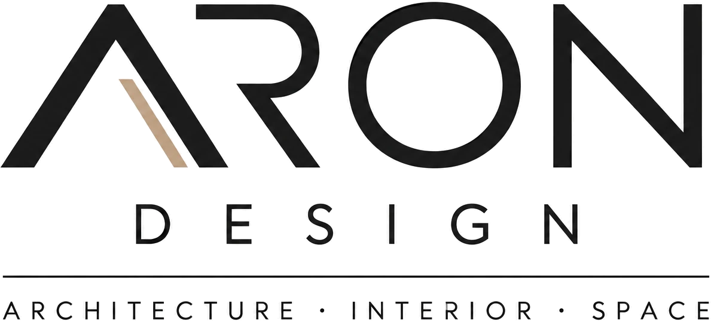
빈 상가 한 층이 스크롤에 따라 아론의 공간으로 지어지는 원페이지 사이트입니다. 화면 순서대로 장면을 정리했습니다.
모든 장면은 지금 완성된 V1(실시간 3D)의 실제 화면입니다.
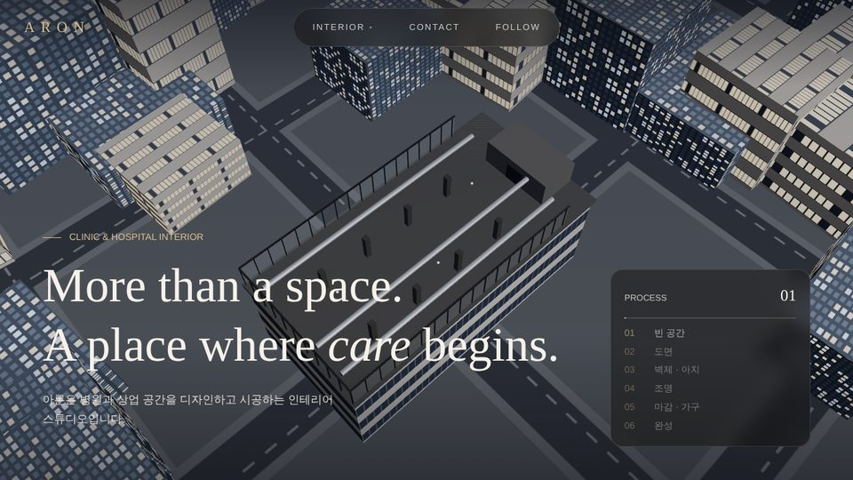
안개 속 ARON 로고, 스크롤하면 안개가 걷힘
빈 층 → 도면 → 벽 → 조명 → 마감, 밤에서 아침으로
LOBBY · SYMBOL · LIGHT · MATERIAL · ROOM
ALL · CLINIC · COMMERCIAL · HOSPITAL 필터
INQUIRIES · LOCATION · FOLLOW
첫 화면은 로고 하나만. 스크롤을 시작하면 안개가 걷히고 건물이 실루엣부터 드러납니다. 위에서 보는 장면은 이 인트로와 다음의 도면 장면, 두 개뿐입니다.

01밝은 안개와 가운데 로고, 아래에 스크롤 아이콘.
로고가 천천히 모이며 등장 · 안개가 흐르듯 움직임
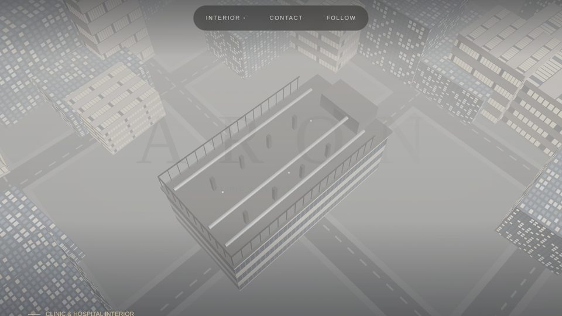
02로고가 커지며 사라지고, 3D 안개도 옅어져 건물이 드러남.
스크롤 1화면 분량
More than a space. A place where care begins. 왼쪽 위에 로고, 가운데 메뉴.
오른쪽에 PROCESS 01~06 진행 표시
위에서 빈 층을 한 번 내려다본 뒤, 카메라가 층 안으로 내려앉아 눈높이에서 벽, 빛, 마감이 채워지는 과정을 보여 줍니다. 빛은 밤에서 아침으로 바뀝니다.
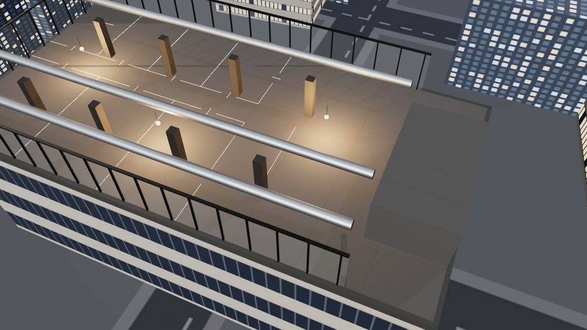
04 · 도면바닥에 평면선이 그려지고, 카메라가 그대로 층 안으로 내려갑니다.
위에서 보는 두 번째(마지막) 장면
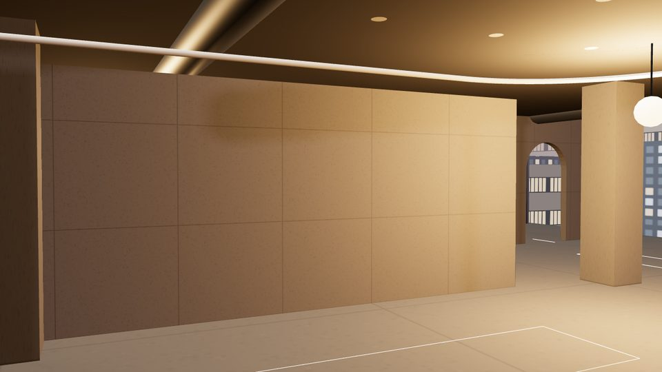
05 · 벽체입구에 선 눈높이에서 주변으로 벽과 아치가 올라옵니다.
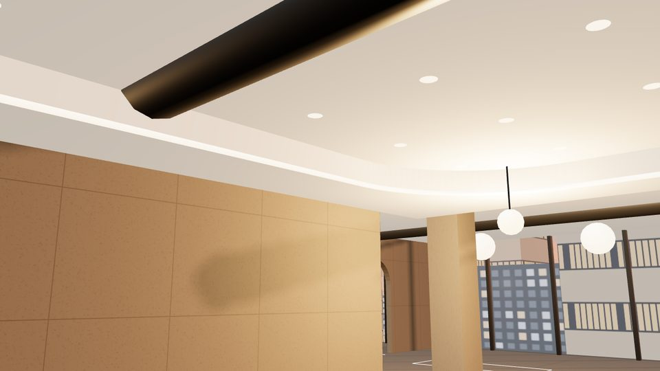
06 · 조명천장 곡선을 따라 간접조명 라인과 매입등, 펜던트가 켜집니다.
시선이 천장으로 올라감
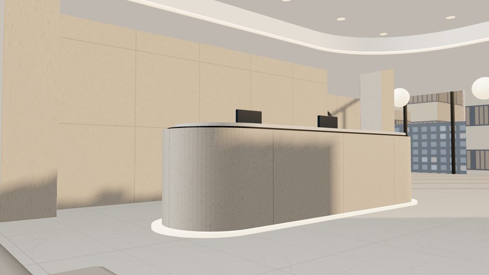
07 · 마감광택 바닥이 깔리고 벽이 석재 질감으로 바뀌며, 곡선 데스크와 소파가 자리 잡습니다.
낮은 시점에서 바닥 반사
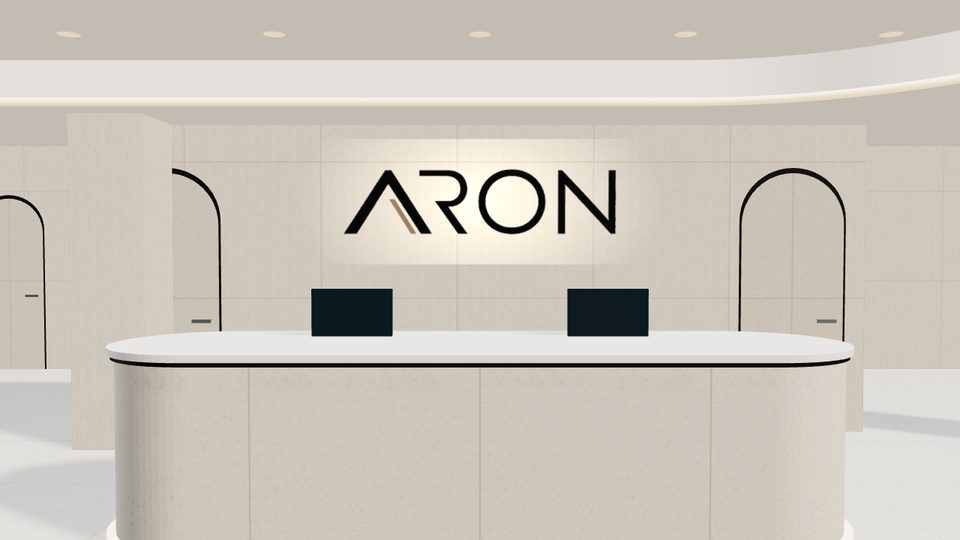
08 · 완성아침 빛 속 로비 정면. 리셉션 뒤 벽의 ARON 로고에 은은한 후광이 켜집니다.
스크롤 위치마다 카메라가 로비 곳곳으로 이동하고, 마지막에는 복도를 지나 진료실로 들어갑니다.
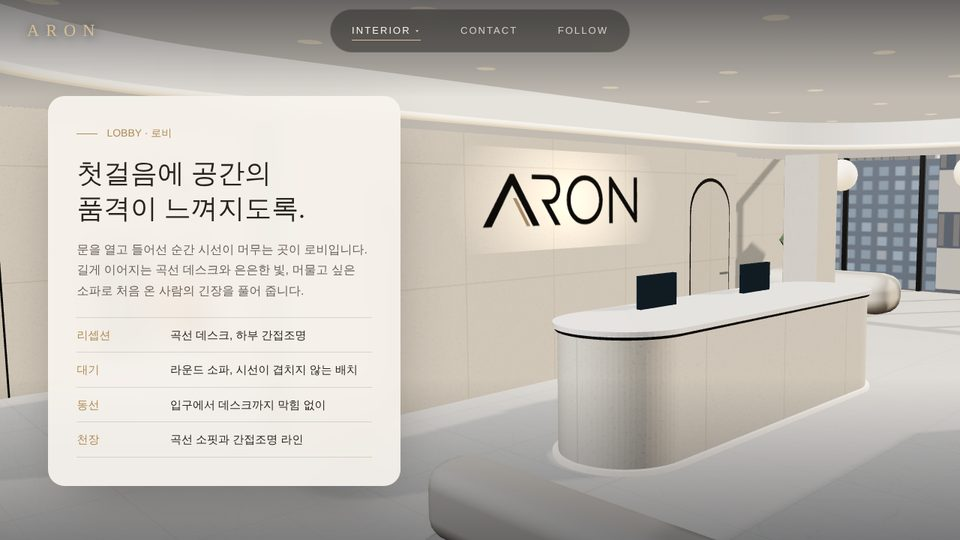
09 · LOBBY곡선 데스크와 소파가 보이는 넓은 로비.
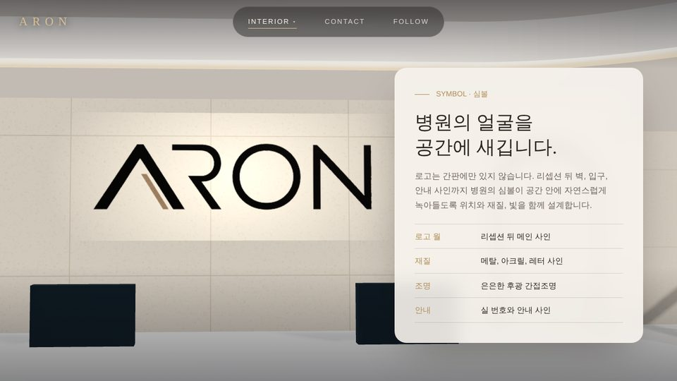
10 · SYMBOL리셉션 뒤 로고 월을 정면에서.
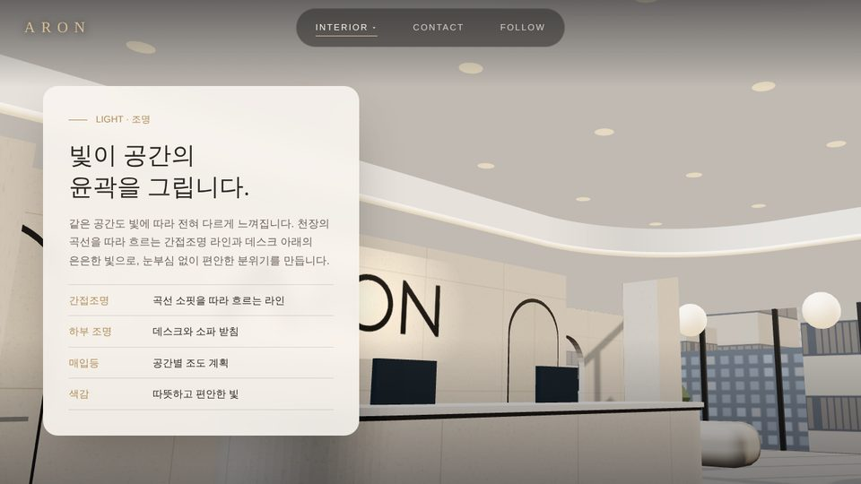
11 · LIGHT천장 곡선 간접조명과 데스크 하부 조명.
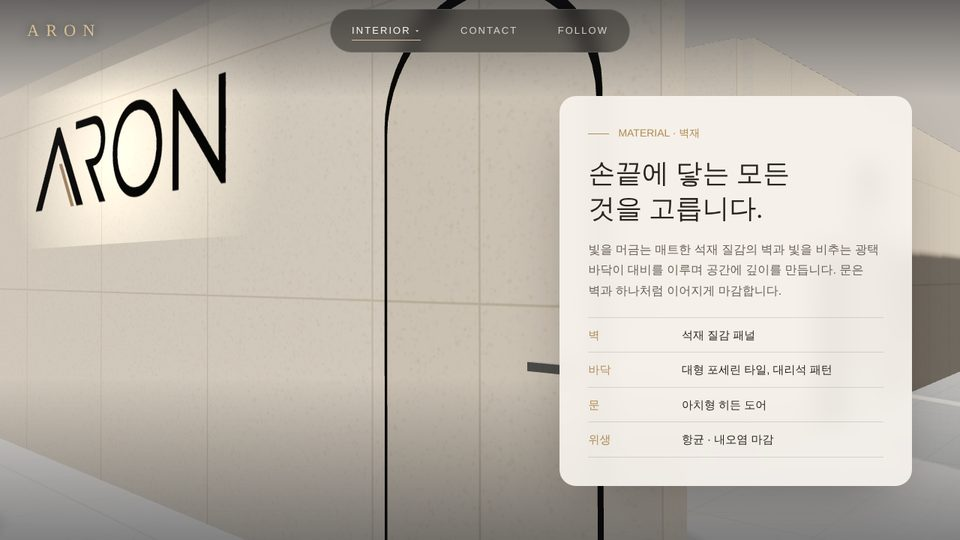
12 · MATERIAL석재 질감 벽, 아치형 히든 도어, 광택 바닥.
실제 자재명은 대표님 확인 후 반영
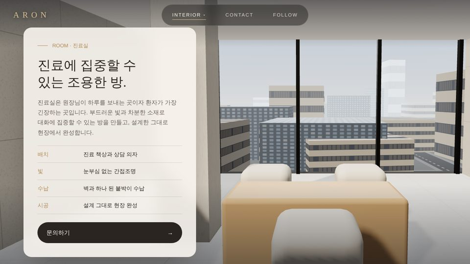
13 · ROOM복도를 지나 진료실 안으로. 문의하기 버튼.
카메라는 벽을 통과하지 않고 복도를 따라 이동
메뉴의 INTERIOR에서 분류를 고르면 이 섹션으로 내려옵니다. CONTACT와 FOLLOW는 푸터로 이동합니다.
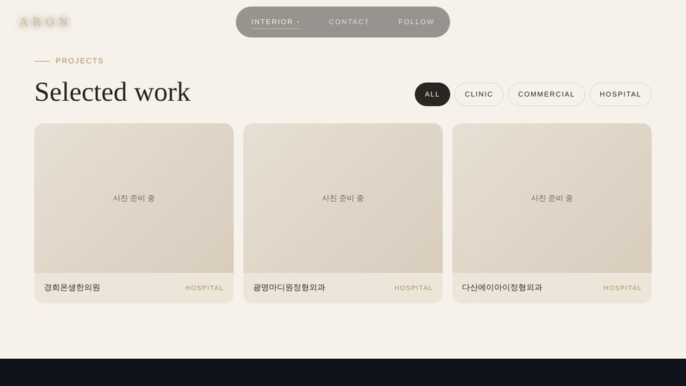
14 · PROJECTSHOSPITAL: 경희온생한의원, 광명마디원정형외과, 다산에이아이정형외과.
사진 받으면 대표 사진 + 갤러리
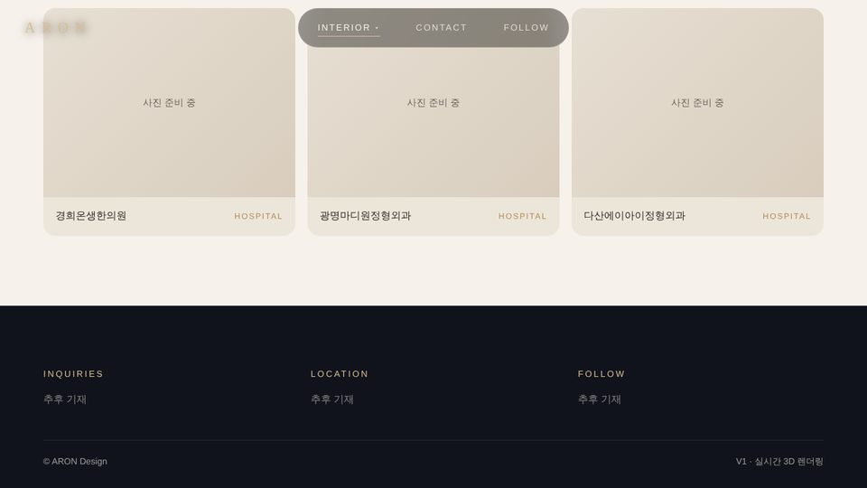
15 · FOOTER내용은 대표님 자료를 받아서 채움.
건물 밖에서 안으로 들어가 웅장한 로비를 만나는 영상입니다. 드리미나로 장면별 사진을 만들고, 시작과 끝 프레임으로 영상을 이어 붙일 예정입니다.
거리에서 상가 건물로 다가가 위층을 올려다봄.
엘리베이터 문이 열리고 유리문과 로고 벽이 정면에.
낮은 카메라로 들어서면 넓게 펼쳐지는 로비.
곡선 간접조명 라인 · 광택 바닥 · 대칭 구도
곡선 데스크와 빛의 라인을 따라 천천히 회전. 패널 구간.
복도를 지나 진료실로 들어가며 마무리.
패널의 자재명 등 일부 내용은 참고 사진을 보고 추정한 예시입니다. 대표님 확인 후 바꿉니다.